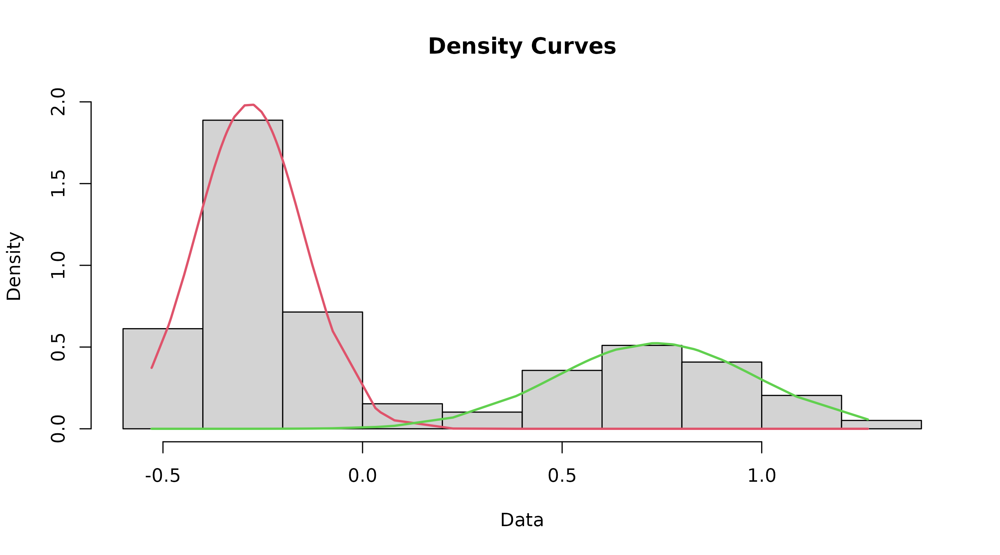

cutoffvalue: Model the data
Lea R Medeiros
2025-08-21
DataModel.RmdUsing the datamodel function to generate models for
each mode of the dataset
The datamodel function fits two component mixture models
to the data and plots a rough histogram with the fitted lines. It also
defines the index.lower value to be used in the find.cutoff function. It
assumes you have installed the cutoffvalue package and loaded the
necessary packages (see the Getting Started vignette for more
information). If you need help on other topics, please see either the
main vignette (Help) or refer to the vignette for another topic.
The
datamodelfunction uses the example dataset (an internal dataset object identified as “cutoffvalue:::exampledata”) by default. Thus, if the path for the dataset is not specified (e.g., running importdata() in the console), this is the dataset that will be used.
When given a label (i.e., “model” in the example below), the
datamodel()function returns a list of 2 objects to the Environment -model$mydataandmodel$indexLower, which are used in subsequent functions.
model <- datamodel(cutoffvalue:::exampledata)
This isn’t the final graph, but still should be inspected to ensure that things look right. In particular, make sure that the point where the two curves intersect is where you are expecting the cutoff to be.